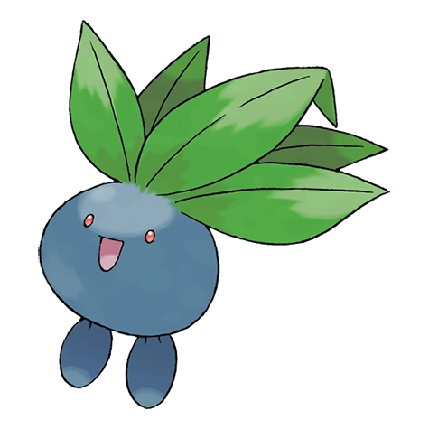
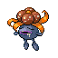

Назад
Бульбазавр

Оддиш — Покемон 1 поколения под номером 43 в Покедекс. Обитает он в регионе Канто и относится к Травяному и Ядовитому типу. В дневное время Оддиш зарывается в землю, чтобы всем своим телом поглощать питательные вещества. Чем плодороднее почва, тем ярче становятся листья этого Покемона.
Тип:
Травяной
Ядовитый
Эволюция
# 043 Оддиш
=>

# 044 Глум